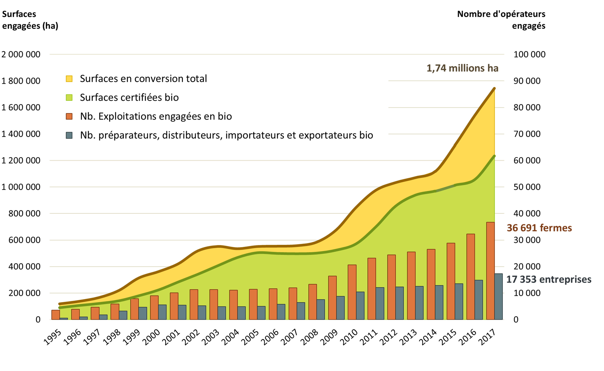

Organic food
Organic food history
Organic food is a trend that originated a few years ago as a response to chemical fertilizers and pesticides. For a few years now, those chemical products are for a great part supposed to have heavy and disastrous repercussions on health, as well for consumers as for producers.

Organic food has encountered two different wide expansion phases:
Evolution of organic fields and producers in France
- One in the late 90s
- One in the 2010s
Products
What are the main differences between organic and non-organic food?
Non organic product categories

Organic product categories